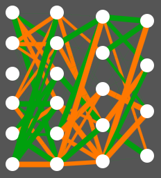

As explained in other parts of the guide, an individual corresponds to a car and its driver. Each individual therefore has its own neural network, which allows it to make driving decisions.
The models used are feedforward neural networks. These are very simple networks.
Let's start with some definitions:
Here is an image to better understand:

A neural network. A connection is green if it is positive, orange if it is negative. The absolute value of each connection is represented by its thickness. If it has a value of 0, it is not displayed.
We notice four columns of neurons, which correspond to the layers.
Neurons in the input layer are not concerned because their value is assigned to them.
For the others, the value of a neuron corresponds to the sum of the values of the neurons in the previous layer, weighted by their connection to the present neuron. To prevent a neuron's value in the network from becoming too large compared to others, this weighted sum is then passed through an activation function. It serves to keep values between -1 and 1. Here, we use the Hyperbolic Tangent function.
The neural network therefore propagates the values from the cameras and the car's speed, and analyzes them up to the output layer. We arbitrarily define that its driving choice corresponds to the output neuron with the highest value.
For example, a good driver will give the Brake neuron the highest value when an obstacle is in front. It is its connections that allow it to make the right decisions.
Where do the connections of neural networks come from?
It is impossible for a human being to know what connections to give to the network for it to drive well. Thus, we start with randomly generated networks. However, an individual will never learn from its mistakes in the context of this software. We will detail this in the next section.
An individual as defined earlier must be able to find its place within a population, so that evolution can occur. It must therefore have a genome. Each connection in its network must therefore be considered as a gene. Thus, its driving characteristics are assimilable to phenotypes.
Each individual receives its genes either randomly at generation 0, or from its parents. They never change during its life, so an individual does not learn. An improvement in drivers' skills over time necessarily comes from genetic evolution. More information in the part of the guide about the Genetic Algorithm.
At each moment during its life, the individual receives data from its car and makes decisions, as described above. The more distance it covers, the more chances it has of reproducing.
Each neural network can be exported in a textual form, which describes its entire architecture and connections. This allows you to save individuals during evolution, to insert them into a new population or in the Experiments tab.